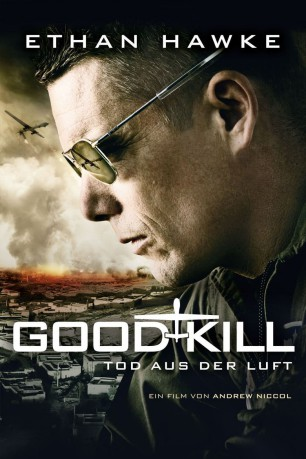
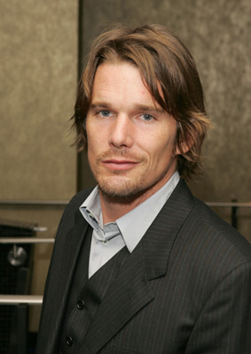
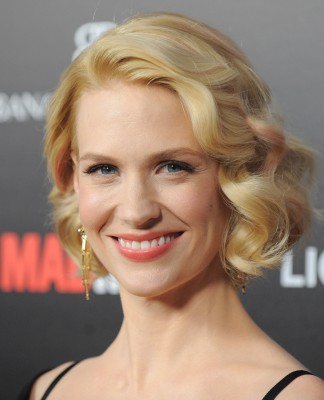
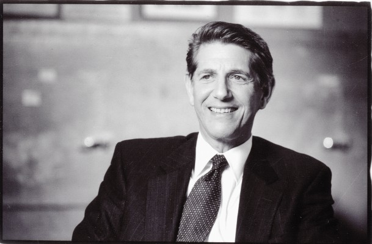
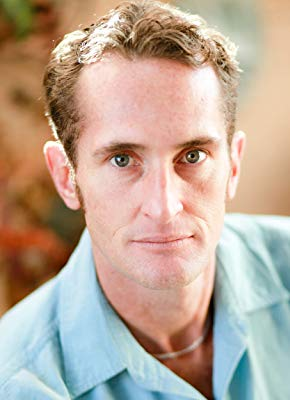

#1898 Good Kill - Tod aus der Luft
Alternativ: Good Kill
 
 IMDB-Wertung: 6.4 / 10
IMDB-Wertung: 6.4 / 10  Metascore: 63
Metascore: 63 
A Las Vegas-based fighter pilot turned drone pilot fights the Taliban by remote control for 12 hours a day, then goes home to the suburbs and feuds with his wife and kids for the other 12. But the pilot is starting to question the mission. Is he creating more terrorists than he's killing? Is he fighting a war without end.
Jahr: 2014
Dauer: 102 Minuten
FSK: 12
Land: USA Studio: IFC FilmsTonspuren:
Untertitel: Deutsch,
Auflösung: 1080p (1920x808) Größe: 4392 MB
Genre: Action, Thriller, Drama
Regisseur: Andrew Niccol
Drehbuch: Andrew Niccol
Soundtrack: Christophe Beck
Darsteller:
-  Ethan Hawke als Major Thomas Egan
 Bruce Greenwood als Lt. Colonel Jack Johns
Bruce Greenwood als Lt. Colonel Jack Johns- Jake Abel als M.I.C. Joseph Zimmer
 Dylan Kenin als Capt. Ed Christie
Dylan Kenin als Capt. Ed Christie- Stafford Douglas als Billy
-  January Jones als Molly Egan
- Sachie Capitani als Jesse Egan
- Michael Sheets als Danny
 Zoë Kravitz als Airman Vera Suarez
Zoë Kravitz als Airman Vera Suarez- Ross Shaw als Lt. Drier
-  Peter Coyote als Langley
- Kristen Rakes als Iris
 Kevin Wiggins als Trooper Morgan
Kevin Wiggins als Trooper Morgan- Alma Sisneros als Emily James
- Rich Chavez als A1C Thomas Rutledge , uncredited
- Stephen M. Hardin als Casino / Bar Patron , uncredited
- Phil Hulett als Sports Talk Host , uncredited
- Cory Kapahulehua als Senior Airman Miller , uncredited
- Akshay Patel als Army Pilot , uncredited
- Edric Ray als Airman Steven Willer , uncredited
- Bill Seward als Sports Anchor , uncredited
- Fatima El Bahraquy als The Woman
- El Khttabi Abdelouahab als The Boy
- Ryan Montano als Airman Roy Carlos
- Zion Rain Leyba als Travis Egan
- Chakir Faiz als The Man
- Colin Jones als Frank
- Luke T. Davis als Senior Instructor Pilot , uncredited
- Jessica Stotz Harrell als Airman Jean Jacobson , uncredited
- Jahan Khalili als Muslim Man , uncredited
-  Jaime Powers als Mosque Man , uncredited
Datei: X:\2014(G-M)\Good Kill - Tod aus der Luft (2014, FSK12, 1920x808).mkv seit 01.09.2015
Festplatte: HD 2013(I-Z)-2014(A-Z)
 Es gibt insgesamt 136 Filme in der Gruppe '2014(G-M)'
Es gibt insgesamt 136 Filme in der Gruppe '2014(G-M)'